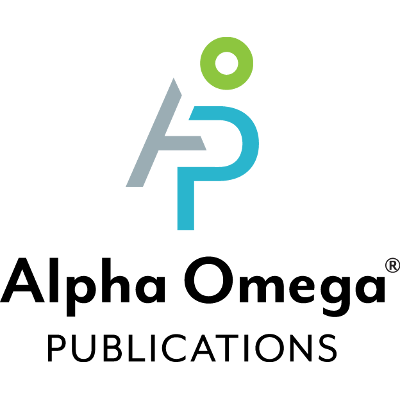

Adhel-Esteban Rivera Rodriguez
Miradero, Mayaguez Puerto Rico 00682


ABOUT
3rd-Year Software Engineering Student with 3.66 GPA with profficiency in Python 3, Java, and good experience in C++, Go, HTML, CSS. Other skills include leadership and management, filmmaking, Stop Motion Animation, Video Editing, & mechanical work.
EDUCATION

BS, Software Engineering, UPRM
August 2021 - May 2026
GPA 3.66

Homeschooling diploma, Homeschool, Mayaguez
August 2021
GPA 4.00
WORK EXPERIENCE

Google Software Engineering STEP Intern
May 2022 – Aug 2022
- Worked with Google Engineers to update a Proxy in the Go Programming Language.
- Updated Proxy to accept openAPI schemas, send request bodies, receive HTTP requests, and validate those HTTP requests against the provided openAPI schema with Go programming language.
- Investigated code and researched open-source libraries for the project. Actively learned to use new technologies and tools.
- Created Design Documents highlighting the approach for the code and highlighting different design alternatives.
- Created engaging presentations for the project and demo.
Pixar Film Director
May 2030 – Aug 2035
- Led team of talented artists under united vision.
- Lead team under a successful vision, time management, assigning work according to each members' abilities and talents, keep up with the deadlines, keeping up morale, clear communication, documentation, video direction, and presentation design.
- Investigated innovative technologies for metallic surfaces.
SKILLS
SOFT SKILLS
- Leadership; I've led software engineering teams from 3 people up to 25. Meeting deadlines, keeping up with tasks, etc.
- Teamwork; experienced in working in teams both in person and online. Communication of ideas, brainstorming, buddy-coding.
- Bilingual; fluent in both English and Spanish.
- Organized; known to organize tasks for myself and other people as well. Also organized on times set for work.
- Public Speaking
TECHNICAL SKILLS
- Python 3
- Java
- C++
- Go
- HTML
- CSS
- JavaScript
- React Native & Expo
- Front End Development
- Google Docs and MS Word
- Google Deck and Power Point Presentation
- 3D Modeling
- 3D Animation
- Stop-Motion Animation
- Film & Video Editing
- Photo Editing
HOBBIES
- Filmmaking of Stop-Motion Animation with engaging stories and smooth animation. Over 50 Stop Motion films lasting from 10 seconds to 15 minutes.
- Volkswagen Beetle YouTube Channel; organizer, scripting, editing, researching.
- Robotics; building complex and useful contraptions with LEGO Mindstorms and programming it in Python 3. Among my contraptions, I have built 3 engine mockups of different sizes and stress-tested them, and programmed them with tunable values.